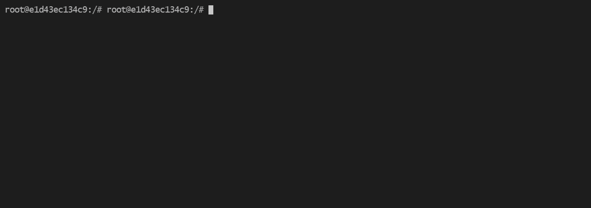

Welcome to NBtools
Collection of tools for monitoring running Jupyter Notebooks and for their execition and linting.
The main tool of this package is nbstat / nbwatch command line utility. It is added at installation and shows the detailed resource utilization for each process of each running Jupyter Notebook. A gif is worth a thousand words:
{kind=link}
Installation
The installation should be as easy as:
pip install py-nbtools
Get started
Goals
This library started as a container of tools, that I came across / developed in my years as an ML researcher. As some of the functions survived multiple refactoring iterations, I decided to share the library so it is easier to perfect them and test in different environments.
Another goal of the project is to show how to communicate with Jupyter API on real world examples: instead of reading through a number of stackoverflow threads, you can find the same information collected in one place and get a rough understanding of what is possible with it and what is not.
Acknowledgements
The nbstat module builds on gpustat package. Using the gpustat for years gave me an idea about possible improvements, which are implemented in this library. While the implementation is different, reading through the code of gpustat was essential for development.
Animated GIFs are created by using Terminalizer: aside from the usual problems with installation, the tool itself is amazing.